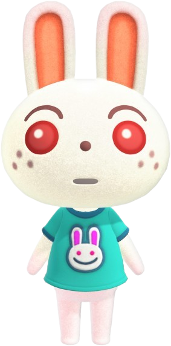
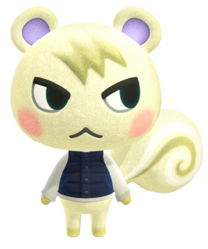

모여봐요 동물의 숲
무인도에서 시작하는 새로운 생활
현실과 동일한 시간이 흐르는 세계에서, 마음 가는 대로 하루하루를 보내는 「동물의 숲」 시리즈.
낚시나 곤충 채집, 가드닝 등 집 밖에서 즐길 수 있는 요소부터 집 꾸미기·패션까지, 다양한 취미를 1년 내내 즐기실 수 있습니다.
「모여봐요 동물의 숲」에서는 「Nook Inc.」에서 제공하는 「무인도 이주 패키지 플랜」에 참가하여 무인도로 이주, 하나하나 내 손으로 꾸려 나가는 새로운 생활이 시작됩니다.
물론 무인도에서 무엇부터 시작하면 좋을지 막막한 당신을 위해 「Nook Inc.」가 꼼꼼하게 지원해드릴 예정이니 걱정 마세요!
함께 이주한 동물들과도 다양한 교류를 통해 친해질 수 있습니다.
생활에 필요한 도구나 가구는 나뭇가지나 돌멩이 등 섬에서 구할 수 있는 것을 재료 삼아 DIY(Do It Yourself)로 직접 만들 수 있습니다.
가구는 실내뿐 아니라 실외에 배치할 수도 있습니다. 마음 가는 대로 섬을 꾸며 보세요.
이번 「동물의 숲」에서는 같은 섬의 주민끼리 최대 4명이 동시에 플레이할 수 있습니다.
인터넷/로컬 통신으로는 본인 또는 친구의 섬에 모여서 최대 8명이 함께 플레이할 수 있습니다.
365일 다양한 표정을 보여주는 이 섬에서 느긋하게 지내도 되고 열심히 살아도 됩니다.
당신은 어떤 생활을 꿈꾸고 계신가요?
- 
- 